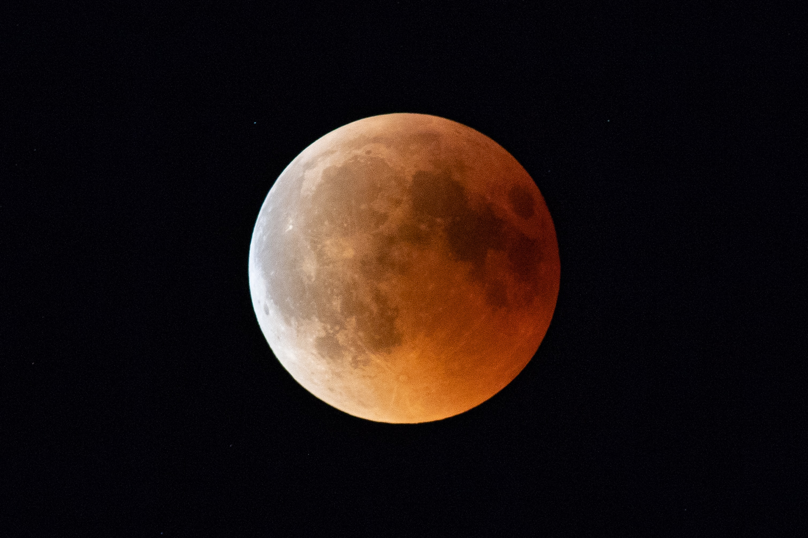
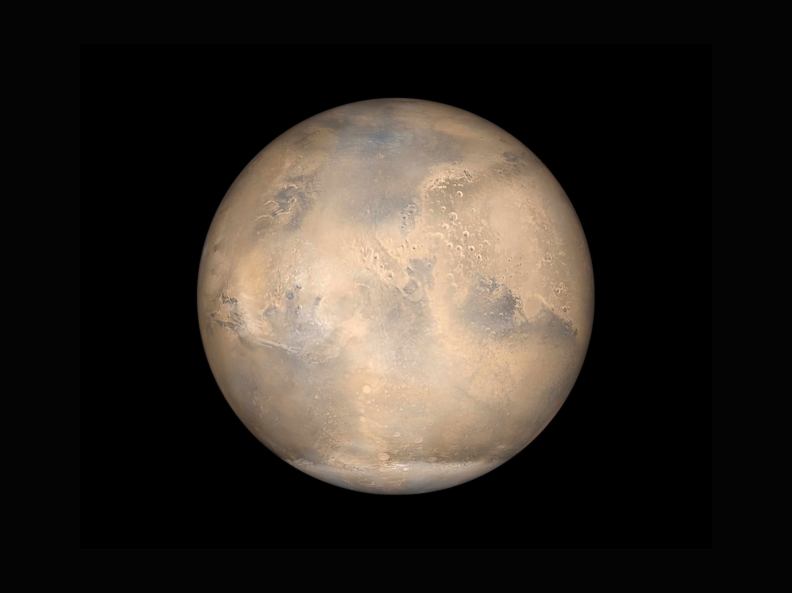

John F. Kennedy - We Choose to go to the Moon
We choose to go to the moon. We choose to go to the moon in this decade and do the other things, not because they are easy, but because they are hard, because that goal will serve to organize and measure the best of our energies and skills, because that challenge is one that we are willing to accept, one we are unwilling to postpone, and one which we intend to win, and the others, too.
Gene Kranz - Tough and Competent
“Every element of the program was in trouble and so were we. The simulators were not working, Mission Control was behind in virtually every area, and the flight and test procedures changed daily. Nothing we did had any shelf life. Not one of us stood up and said, ‘Dammit, stop!’ I don’t know what Thompson’s committee will find as the cause, but I know what I find. We are the cause! We were not ready! We did not do our job. We were rolling the dice, hoping that things would come together by launch day, when in our hearts we knew it would take a miracle. We were pushing the schedule and betting that the Cape would slip before we did.
Carl Sagan - Pale Blue Dot
The Earth is a very small stage in a vast cosmic arena. Think of the rivers of blood spilled by all those generals and emperors so that, in glory and triumph, they could become the momentary masters of a fraction of a dot. Think of the endless cruelties visited by the inhabitants of one corner of this pixel on the scarcely distinguishable inhabitants of some other corner, how frequent their misunderstandings, how eager they are to kill one another, how fervent their hatreds.

John F. Kennedy - We Choose to go to the Moon
In the last 24 hours we have seen facilities now being created for the greatest and most complex exploration in man's history. We have felt the ground shake and the air shattered by the testing of a Saturn C-1 booster rocket, many times as powerful as the Atlas which launched John Glenn, generating power equivalent to 10,000 automobiles with their accelerators on the floor. We have seen the site where the F-1 rocket engines, each one as powerful as all eight engines of the Saturn combined, will be clustered together to make the advanced Saturn missile, assembled in a new building to be built at Cape Canaveral as tall as a 48 story structure, as wide as a city block, and as long as two lengths of this field.
Carl Sagan - Pale Blue Dot
Our posturings, our imagined self-importance, the delusion that we have some privileged position in the Universe, are challenged by this point of pale light. Our planet is a lonely speck in the great enveloping cosmic dark. In our obscurity, in all this vastness, there is no hint that help will come from elsewhere to save us from ourselves.
Frank Borman - One World
The view of the earth from the moon fascinated me - a small disk, 240,000 mniles away. It was hard to think that that little thing held so many problems, so many frustrations. Raging nationalistic interests, famines, wars, pestilence don't show from that distance. I'm convinced that some wayward stranger in a space-craft, coming from some other part of the heavens, could look at earth and never know that it was inhabited at all. But the samw wayward stranger would certainly know instinctively that if the earth were inhabited, then the destinies of all who lived on it must inevitably be interwoven and joined. We are one hunk of ground, water, air, clouds, floating around in space. From out there it really is 'one world'.
Carl Sagan - Pale Blue Dot
Look again at that dot. That's here. That's home. That's us. On it everyone you love, everyone you know, everyone you ever heard of, every human being who ever was, lived out their lives. The aggregate of our joy and suffering, thousands of confident religions, ideologies, and economic doctrines, every hunter and forager, every hero and coward, every creator and destroyer of civilization, every king and peasant, every young couple in love, every mother and father, hopeful child, inventor and explorer, every teacher of morals, every corrupt politician, every "superstar," every "supreme leader," every saint and sinner in the history of our species lived there--on a mote of dust suspended in a sunbeam.
Gene Cernan - Symbol of Apollo
The most significant things we can think about, when we think about Apollo, is that it has opened for us, for us being the World, a challenge of the future. The door is now cracked, but the promise of that future lies in the young people, not just in America, but the young people all over the world. Learning to live and learning to work together. In order to remind all the peoples of the World, in so many countries throughout the world, that this is what we all are striving for in the future, Jack has picked up a very significant rock, typical of what we have here in the valley of Taurus Littrow. It's a rock composed of many fragments, of many sizes, and many shapes, probably from all parts of the Moon, perhaps billions of years old. But a rock of all sizes and shapes, fragments of all sizes and shapes, and even colors that have grown together to become a cohesive rock outlasting the nature of Space, sort of living together in a very coherent, very peaceful manner. When we return this rock or some of the others like it to Houston, we'd like to share a piece of this rock with so many of the countries throughout the world. We hope that this will be a symbol of what our feelings are, what the feelings of the Apollo Program are, and a symbol of mankind that we can live in peace and harmony in the future.
Buzz Aldrin - Magnificent Desolation
I believe that space travel will one day become as common as airline travel is today. I’m convinced, however, that the true future of space travel does not lie with government agencies — NASA is still obsessed with the idea that the primary purpose of the space program is science — but real progress will come from private companies competing to provide the ultimate adventure ride, and NASA will receive the trickle-down benefits.
